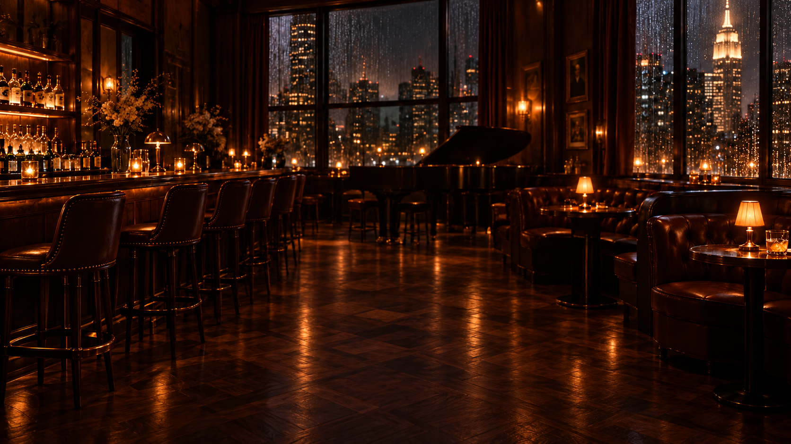

AFTER HOURS
/ PIANO STUDIO
LIVE-VORSCHAU · ZUFALLSNOTEN · OHNE TON
Vollbild ↗

NEW YORK · AFTER DARK
After Hours
Zufällige Noten · visuelle Studie
Ⅱ Pause
Tempo
1.0×
Notendichte
Hintergrund
Bild wechseln ↥
Bar zurücksetzen
0:00